Four engagements. Four different starting points. One consistent output: marketing that works, systems that scale, and results that are real.

e-Attestations had 16 years in the market, a strong product, and an invisible brand. A name that non-French speakers couldn't pronounce, no marketing engine, no pipeline attribution, no category ownership in TPRM, and real international ambitions with nothing built to support them.
Initially called in to lead a rebrand. Ended up building the entire marketing function from scratch.
What was builtFull rebrand and rename to Aprovall with new category positioning in TPRM. Full-funnel demand generation from scratch: webinars, events, paid LinkedIn and Google, content and SEO engine, analyst relations securing Gartner and Forrester placements. CRM implementation with attribution backbone. AI workflows across content production, SEO and GEO visibility, competitor intelligence, and marketing operations.
Led the full rebrand and rename from e-Attestations to Aprovall with new TPRM category positioning. Built full-funnel demand generation from scratch, analyst relations securing Gartner and Forrester placements, and AI workflows across content production, GEO visibility, and competitor intelligence.Series A · TPRM SaaS · Fractional CMO

Brevo had acquired 6 companies in 18 months and needed to unify them under a single brand with a clear market position. No defined product marketing, no GTM strategy, and an organisation that had outgrown its identity. Series B, 750 employees. The ambition was global. The infrastructure wasn't there yet.
What was builtLed the full rebrand and rename from Sendinblue to Brevo, with new category positioning as a CRM platform for SMBs. Built the GTM strategy across all product lines and led product marketing to align capabilities with market messaging. Drove enterprise lead generation, brand positioning, and stakeholder influence across a multi-country organisation.
"Miri shaped our 360 marketing plan and brought thoughtful leadership and consistent results across rebrand, GTM, and global expansion."Series B · 750 employees · MarTech

Assurly had completed two years of R&D, secured its initial seed funding, and reached MVP. The product was ready to launch. What was missing was the strategic foundation to take it to market: brand positioning, a go-to-market strategy, an acquisition plan, and product front-end design. Everything needed to be built from zero in parallel.
What was builtBuilt the full go-to-market strategy from the ground up, including brand positioning and product design. Defined the acquisition strategy across direct-to-consumer and white label partner channels. Led cross-functional alignment and developed the partner strategy to support distribution at scale.
Assurly continues to grow its partner network and category position since the engagement.Seed stage · InsurTech · product launch

During Criteo's IPO on Nasdaq, a decision was made to enhance marketing to make a mark in the US market. Branding and positioning were not as strong as the product. The company needed to build stronger global growth strategies and facilitate cross-functional alignment across APAC, EMEA, and NAM.
What was builtLed global brand repositioning, new visual identity, website rebuild, messaging architecture, and launch campaigns. Implemented brand strategy across three continents while maintaining consistency across languages and regional nuances. Developed global brand narratives, product identity, and messaging including product marketing materials.
Criteo transitioned from a French retargeting company to one of the top AdTech firms globally during this engagement.Series D · Nasdaq IPO · 2,500+ employees
They span both. The Aprovall engagement was a fractional CMO role over roughly 15 months. The Brevo, Criteo, and Assurly results came from senior in-house marketing leadership earlier in an 18-year career. The throughline is the same: brand, positioning, GTM, and demand built from a weak or missing starting point.
B2B technology companies across stages and categories: seed-stage InsurTech (Assurly), Series A TPRM SaaS (Aprovall), Series B MarTech (Brevo), and an AdTech company through its Nasdaq IPO (Criteo). The common pattern is a strong product held back by weak marketing.
It depends on the starting point. Assurly went from seed funding to market with 100 paying clients in six months. Aprovall moved from an invisible brand to a full demand engine over 15 months, ending in the Gartner 2025 TPRM Market Guide and the Forrester 2026 Landscape. Shorter sprint engagements produce visible output inside the first month.
No. Rebrands are part of it (e-Attestations to Aprovall, Sendinblue to Brevo), but the engagements also built full-funnel demand generation, CRM and attribution, product marketing, partner strategy, and AI workflows across content, SEO, GEO, and competitor intelligence.
Every engagement starts with an audit. Two weeks to understand the ground before touching anything.
Book a call